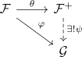
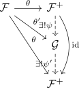

sheafification on a presheaf of topological spaces
Definition / Proposition
Let $(X, \mathcal{T})$ be a topological space and $\mathcal{F}$ a presheaf. Then the sheafification is defined as sheaf $\mathcal{F}^+$ and a morphism of sheafs $\theta: \mathcal{F} \rightarrow \mathcal{F}^+$ satisfying following universal property:
For each Sheaf $G$ and morphism $\varphi: \mathcal{F} \rightarrow \mathcal{G}$ there exists a unique morphism $\psi: \mathcal{F}^{+} \rightarrow \mathcal{G}$ such that following diagram commutes

i.e. the sheafification is a left adjoint to the forgetful functor from PSh(X) to Sh(X)
Proof: existence
Kategorientheoretisch etwas unsauber
uniqueness up to unique isomorophsim
Follows from

existence
construction
Let
such that for every $u \in U$ there exists an open neighbourhood $V \subseteq U$ of $u$ and a section $\sigma \in \mathcal{F}(V)$ such that for all $v \in V$ we get the induced germ
Furthermore, the restriction for $U \subseteq V$ is the usual projection
adjusted to its domain $\mathcal{F}^+(U)$
sheaf
glueing of a sheaf
for an open covering with $U_i$, such that $U_i$ and $U_j$ coincide, we define
for induced germs $(U_i, s_u)$ it is welldefined. Furthermore, it satisfies the condition, since $(
locality of a sheaf
follows from the construction
universal property
TODO